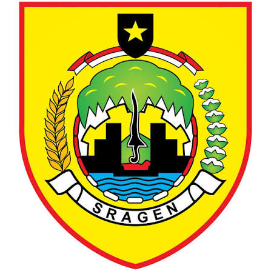

Si ABDI
Sistem Absensi Digital
Waktu sekarang (WIB)
--:--:--
--
Absen Masuk, Absen Pulang, dan Ajukan Ijin hanya tersedia pada jam layanan di atas.
Pilih jenis presensi. Sistem akan memeriksa lokasi Anda, lalu memverifikasi wajah.
Ijin tidak perlu berada di kantor, namun tetap wajib verifikasi wajah.
Menyiapkan kamera & model wajah…
Posisikan wajah di dalam bingkai